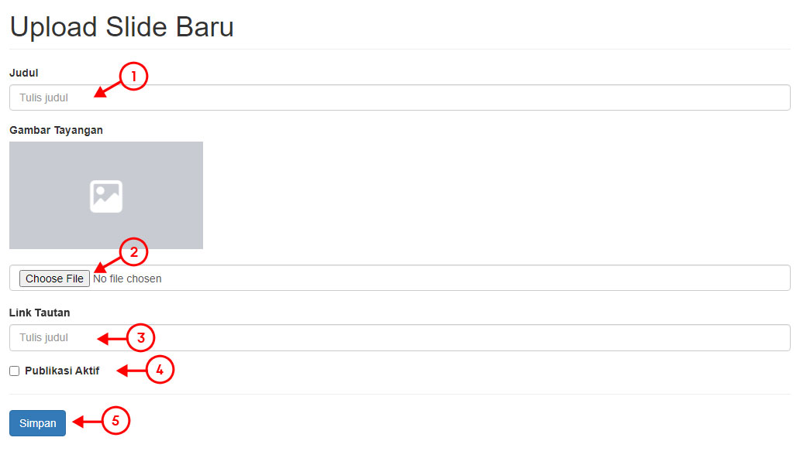
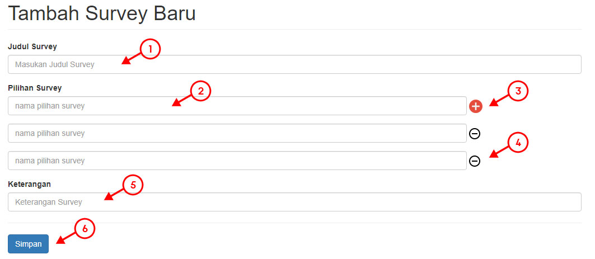
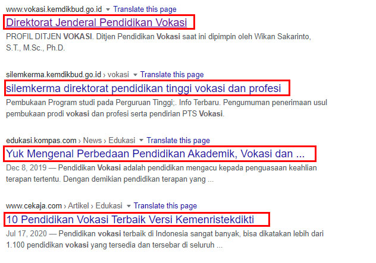
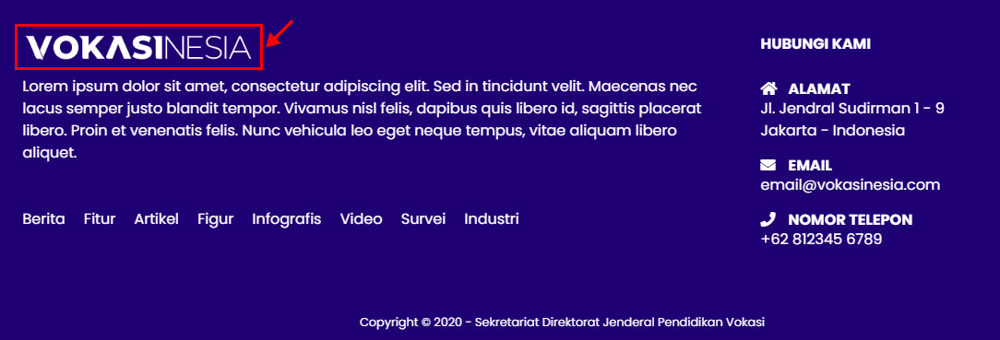
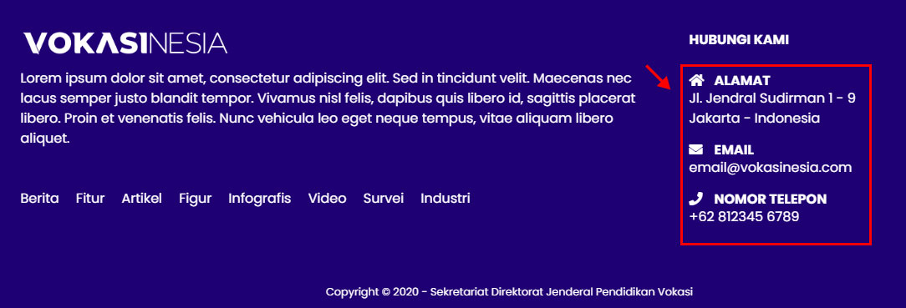

DOCUMENTATION
DOCUMENTATION
Dokumentasi ini disusun sebagai pedoman dasar Admin atau User Admin lainnya untuk melakukan pengaturan dan penyesuaian terhadap website VOKASINESIA.
- Email : Masukan alamat email terdaftar Anda.
- Password : Masukan password terdaftar Anda.
- Remember Me : Fungsi ini berfungsi untuk menyimpan session login user Anda agar tidak perlu melakukan login kembali pada periode selanjutnya di perangkat yang sama dalam durasi 1x24 jam sejak melakukan login.
- Forget Password : Anda dapat menggunakan fungsi ini jika Anda mengalami kesulitan dalam melakukan login akun Anda (+).
- Tombol Login : Setelah mengisi semua data dengan benar, klik tombol ini untuk melanjutkan.
- Email : Masukan alamat email terdaftar Anda.
- Tombol Reset Password : Setelah mengisi data alamat email dengan benar, klik tombol ini untuk melanjutkan. Jika email yang Anda masukan telah sukses terverifikasi, sistem akan mengirimkan email ke Inbox Anda yang berisi panduan untuk melakukan pergantian password baru.
Pada beberapa kondisi menyebabkan email terakui sebagai SPAM, mohon cek Folder SPAM jika Anda tidak menerima email panduan di Inbox Anda. - Kembali ke halaman login : Gunakan link ini untuk membatalkan dan kembali ke halaman login.
- Show : Fungsi ini mengatur jumlah post di tampilkan pada setiap halaman.
- Search : Fungsi pencarian ini berguna untuk mempermudah pencarian data dengan memasukan kata kunci yang terkait dengan data yang akan dicari.
- Judul : Menampilkan judul data.
- Kategori : Menampilkan kategori data.
- Author : Menampilkan user yang memiliki / menulis data tersebut.
- Tanggal : Menampilkan tanggal kapan data tersebut dibuat.
- Status : Menampilkan status publikasi data.
Published : Data dengan tanda CENTANG HIJAU menandakan data tersebut aktif dan tampil pada website.
Unpublished : Data dengan tanda SILANG MERAH menandakan data tersebut tidak aktif dan tidak tampil pada website - Edit : Digunakan untuk melakukan edit dan penyesuaian terhadap data.
- Hapus : Digunakan untuk melakukan hapus data.
- Sistem akan memberikan konfirmasi peringatan sebelum melanjutkan fungsi ini.
- Jika user memilih "OK" maka artinya user setuju untuk menghapus data post.
- Data post yang telah terhapus tidak dapat untuk dikembalikan lagi.
- User dapat memilih "CANCEL" untuk membatalkan.
(Pengembang sistem tidak bertanggung jawab atas terjadinya kesalahan yang terjadi atas penggunaan fungsi ini.) - Pagination : Digunakan untuk memilih halaman untuk ditampilkan.
Anda dapat membuat data post baru dengan cara:
- Memilih menu Data Post --> Tambah Data Baru pada menu di sebelah kiri.
- Selanjutnya Anda akan ditampilkan halaman untuk dapat memulai menulis data post baru.
 Keterangan gambar:
Keterangan gambar:
- Judul : Diisi dengan judul data post yang akan dibuat.
- Text Pendek : Diisi dengan text pendek yang akan tampil sebagai preview terhadap data post yang akan dibuat.
Maksimal karakter untuk mengisi kolom ini adalah 250 karakter hutuf. - Isi : Diisi dengan data lengkap dari data post yang akan dibuat.
- Gambar Tayangan : Fungsi ini digunakan untuk memilih gambar utama dari data post yang akan dibuat.
Cara upload gambar utama - Kategori : Anda diharuskan memilih kategori dimana data post tersebut akan dikelompokan.
Cara memilih kategori - Youtube Link : Form ini hanya akan tampil saat Anda memilih kategori "Video". Anda tidak akan menemukan form ini jika memilih selain kategori "Video".
Anda diharuskan untuk memasukan link code video yang akan ditampilkan pada form ini. - Tags : Diisi dengan kata kunci terkait data post yang akan dibuat. Kata kunci ini bisa berfungsi untuk mengelompokan data post yang serupa ataupun sebagai kata kunci di mesin pencarian seperti Google, Yahoo, Bing, dan lain-lain.
- Publikasi Aktif : Fungsi ini digunakan untuk mengatur publikasi data post yang sedang Anda tulis tersebut.
Jika checkbox tidak tercentang, maka data post tersebut tidak / belum akan ditampilkan di website (Draft).
Jika checkbox tercentang, maka data post tersebut akan aktif dan tampil di website.
Detail Penjelasan - Pilih Tanggal : Fungsi ini digunakan untuk mengatur waktu publikasi sebuah data post. Anda dapat mengatur kapan waktu data post tersebut dibuat.
- Pengaturan tanggal akan mempengaruhi urutan data post tersebut untuk tampil di website - Buka Komentar : Fungsi ini digunakan untuk mengatur apakah pengunjung dapat meninggalkan komentar terhadap data post tersebut.
Jika checkbox tidak tercentang, maka pengunjung website tidak dapat meninggalkan komentar pada data post tersebut.
Jika checkbox tercentang, maka pengunjung website dapat meninggalkan komentar pada data post tersebut.
Detail Penjelasan - Preview dan Simpan : Tombol rpeview digunakan untuk melihat hasil tulisan Anda sebelum di publikasikan. Setelah data post yang Anda tulis telah lengkap dan benar, selanjutnya Anda dapat menggunakan tombol Simpan untuk mempublikasikan data post tersebut.
Upload Gambar Utama
Anda dapat melakukan upload gambar utama untuk setiap data post dengan cara:
- Klik tombol untuk memilih gambar.

- Pilih gambar yang diinginkan, lalu klik "Open".

- Gambar akan tampil di kotak yang berada di atasnya. Pastikan gambar yg tampil sudah sesuai dengan yang diinginkan.

Memilih Kategori Data
Secara default, sistem akan memilih kategori "Artikel" untuk setiap data post yang akan dibuat. Anda dapat memilih kategori yang sesuai untuk setiap data post dengan cara:
- Klik menu dropdown.
- Pilih kategori yang dipilih dari list yang muncul.
Mempublikasi Data Post dan Menyimpan Draft
Anda dapat menulis data post setiap saat, namun karena berbagai kesibukan Anda mungkin ingin untuk berhenti menulis dahulu dan akan melanjutkan menulis setelah Anda kembali.
- Centang kotak jika Anda ingin mempublikasikan data post yang Anda tulis atau kosongkan centang kotak jika Anda ingin menyimpan tulisan Anda untuk dapat dilanjutkan suatu saat nanti.
Fungsi pilih tanggal berfungsi jika Anda ingin mengatur kapan data post tersebut dipublikasikan. Fungsi ini hanya berlaku untuk "Back Date", Anda tidak dapat mengatur sebuah data post untuk di publikasikan diatas tanggal hari ini.
Perlu diperhatikan bahwa pengaturan fungsi ini akan mempengaruhi urutan tampil data post tersebut di website.

Membuka dan Menutup Komentar
Anda dapat menyesuaikan kebutuhan komentar pada setiap data post.
- Kosongkan centang kotak jika Anda tidak ingin membuka komentar pada data post yang sedang Anda tulis.
- Centang kotak jika Anda ingin membuka komentar pada data post yang sedang Anda tulis.
- Show : Fungsi ini mengatur jumlah list slide di tampilkan pada setiap halaman.
- Search : Fungsi pencarian ini berguna untuk mempermudah pencarian slide dengan memasukan kata kunci yang terkait dengan data slide yang akan dicari.
- Judul : Menampilkan judul slide.
- Gambar : Menampilkan preview gambar dari data slide.
- Tanggal : Menampilkan tanggal kapan data slide tersebut dibuat.
- Status : Menampilkan status publikasi data slide.
Published : Data dengan tanda CENTANG HIJAU menandakan data tersebut aktif dan tampil pada website.
Unpublished : Data dengan tanda SILANG MERAH menandakan data tersebut tidak aktif dan tidak tampil pada website - Edit : Digunakan untuk melakukan edit dan penyesuaian terhadap data slide.
- Hapus : Digunakan untuk melakukan hapus data slide.
- Sistem akan memberikan konfirmasi peringatan sebelum melanjutkan fungsi ini.
- Jika user memilih "OK" maka artinya user setuju untuk menghapus data slide.
- Data slide yang telah terhapus tidak dapat untuk dikembalikan lagi.
- User dapat memilih "CANCEL" untuk membatalkan.
(Pengembang sistem tidak bertanggung jawab atas terjadinya kesalahan yang terjadi atas penggunaan fungsi ini.) - Pagination : Digunakan untuk memilih halaman untuk ditampilkan.
Anda dapat menambahkan slide / banner baru, dengan cara:
- Buka menu Slide --> Tambah Slide Baru pada menu di sebelah kiri.
- Selanjutnya Anda akan ditampilkan halaman untuk dapat memulai menulis data post baru.
Keterangan gambar:
- Judul : Diisi dengan judul data slide yang akan dibuat.
- Gambar Tayangan : Fungsi ini digunakan untuk memilih gambar utama dari data slide yang akan dibuat. Setelah gambar dipilih, selanjutnya akan tampil preview dari gambar yang terpilih pada kotak di atasnya.
Cara upload gambar - Link Tautan : Kolom ini tidak wajib untuk diisi. Anda dapat menggunakan fungsi ini untuk mengarahkan slide yang sedang dibuat ke sebuah tautan yang diinginkan.
- Publikasi Aktif : Fungsi ini digunakan untuk mengatur publikasi data slide yang sedang Anda buat.
Jika checkbox tidak tercentang, maka data slide tersebut tidak / belum akan ditampilkan di website (Draft).
Jika checkbox tercentang, maka data slide tersebut akan aktif dan tampil di website.
Detail Penjelasan - Simpan : Setelah semua data slide telah diisi dengan lengkap dan benar, selanjutnya Anda dapat menggunakan tombol ini untuk menyimpan / mempublikasikan data slide tersebut.
Anda dapat melakukan moderasi komentar dengan cara:
- Buka menu Komentar pada menu di sebelah kiri.
- Selanjutnya akan ditampilkan halaman yang menampilkan daftar semua komentar yang ada di website.
Keterangan gambar:
- Show : Fungsi ini mengatur jumlah list komentar di tampilkan pada setiap halaman.
- Search : Fungsi pencarian ini berguna untuk mempermudah pencarian komentar dengan memasukan kata kunci yang terkait dengan data komentar yang akan dicari.
- Nama : Menampilkan nama penulis komentar.
- Email : Menampilkan alamat email penulis komentar.
- Isi Komentar : Menampilkan isi dari komentar yang ditulis.
- Judul Post : Menampilkan data post dimana komentar tersebut ditulis.
- Tanggal : Menampilkan tanggal kapan komentar tersebut ditulis.
- Tombol Setuju : Digunakan menyetujui sebuah komentar untuk dapat tampil di website.
- Setelah komentar di setujui maka komentar akan langsung tampil di website.
- Komentar yang telah di setujui tidak dapat dikembalikan ke status pending (menunggu persetujuan).
- Untuk menghilangkan agar komentar yang telah di setujui hilang, Anda dapat melakukan delete terhadap komentar tersebut.
(Pengembang sistem tidak bertanggung jawab atas keputusan yang diambil untuk menyetujui sebuah komentar ditampilkan di website.) - Tombol Hapus : Digunakan untuk menolak atau menghapus sebuah komentar agar tidak tampil di website.
- Sistem akan memberikan konfirmasi peringatan sebelum melanjutkan fungsi ini.
- Jika user memilih "OK" maka artinya user setuju untuk menghapus sebuah komentar.
- Komentar yang telah terhapus tidak dapat untuk dikembalikan lagi.
- User dapat memilih "CANCEL" untuk membatalkan.
(Pengembang sistem tidak bertanggung jawab atas terjadinya kesalahan yang terjadi atas penggunaan fungsi ini.) - Pagination : Digunakan untuk memilih halaman untuk ditampilkan.
- Show : Fungsi ini mengatur jumlah survey di tampilkan pada setiap halaman.
- Search : Fungsi pencarian ini berguna untuk mempermudah pencarian survey dengan memasukan kata kunci yang terkait dengan survey yang akan dicari.
- Judul Survey : Menampilkan judul survey.
- Keterangan : Menampilkan keterangan mengenai survey tersebut.
- Status : Menampilkan status publikasi survey.
Aktif Survey : Data dengan tanda CENTANG HIJAU menandakan survey tersebut aktif dan tampil pada website.
Closed Survey : Data dengan tanda SILANG MERAH menandakan survey tersebut tidak aktif dan tidak tampil pada website.
- Anda tidak dapat membuka survey baru saat ada survey yang sedang aktif.
- Anda dapat membuka survey baru dengan cara menutup terlebih dahulu survey yang sedang aktif. - View : Digunakan untuk melihat hasil survey.
- Close : Digunakan untuk menonaktifkan survey.
- Sistem akan memberikan konfirmasi peringatan sebelum melanjutkan fungsi ini.
- Jika user memilih "OK" maka artinya user setuju untuk menutuop survey.
- Survey yang telah ditutup tidak dapat untuk dibuka kembali.
- User dapat memilih "CANCEL" untuk membatalkan.
(Pengembang sistem tidak bertanggung jawab atas terjadinya kesalahan yang terjadi atas penggunaan fungsi ini.) - Pagination : Digunakan untuk memilih halaman untuk ditampilkan.
System website hanya mengakomodasi 1 (satu) survey yang aktif dalam satu waktu. Jika masih ada survey yang masih aktif maka Anda tidak dapat membuat survey baru.
Setelah memastikan tidak ada survey yang aktif, Anda dapat membuat survey baru dengan cara:
- Buka menu Survey --> Survey Baru pada menu di sebelah kiri.
- Selanjutnya Anda akan ditampilkan halaman untuk dapat memulai membuat survey baru.
Keterangan gambar:
- Judul : Diisi dengan Judul / Pertanyaan survey yang akan dibuat.
- Pilihan Survey : Diisi dengan poin-poin jawaban survey yang akan dibuat.
- Tambah Jawaban : Tombol ini digunakan untuk menambah poin jawaban sesuai kebutuhan survey yang akan dibuat.
- Hapus Jawaban : Tombol ini digunakan untuk menghapus / mengurangi poin jawaban sesuai kebutuhan survey yang akan dibuat.
- Keterangan : Masukan keterangan tambahan yang dibutuhkan untuk survey yang akan dibuat.
- Simpan : Setelah semua data telah diisi dengan lengkap dan benar, selanjutnya Anda dapat menggunakan tombol ini untuk menyimpan / mempublikasikan survey tersebut.

- Nama Kategori : Menampilkan nama kategori.
- Image : Menampilkan gambar kategori. Gambar ini akan menjadi background pada halaman arsip.
- Edit Kategori : Fungsi untuk melakukan penyesuaian pada sebuah kategori.
- Delete Kategori : Menghapus kategori.
- Sistem akan memberikan konfirmasi peringatan sebelum melanjutkan fungsi ini.
- Jika user memilih "OK" maka artinya user setuju untuk menghapus sebuah kategori.
- Kategori yang telah terhapus tidak dapat untuk dikembalikan lagi.
- Jika kategori dihapus, maka semua data post yang ada di dalam kategori tersebut akan secara otomatid dipindahkan ke dalam kategori "Artikel".
- User dapat memilih "CANCEL" untuk membatalkan.
(Pengembang sistem tidak bertanggung jawab atas terjadinya kesalahan yang terjadi atas penggunaan fungsi ini.)
Anda dapat menambahkan slide / banner baru, dengan cara:
- Buka menu Kategori --> Kategori Baru pada menu di sebelah kiri.
- Selanjutnya Anda akan ditampilkan halaman untuk dapat memulai membuat kategori baru.
Keterangan gambar:
- Judul : Diisi dengan nama kategori yang akan dibuat.
- Gambar Tayangan : Fungsi ini digunakan untuk memilih gambar kategori dari kategori yang akan dibuat. Gambar ini akan menjadi background pada halaman arsip. Setelah gambar dipilih, selanjutnya akan tampil preview dari gambar yang terpilih pada kotak di atasnya.
Cara upload gambar - Simpan : Setelah semua data slide telah diisi dengan lengkap dan benar, selanjutnya Anda dapat menggunakan tombol ini untuk menyimpan / mempublikasikan data slide tersebut.
- Nama Kategori : Menampilkan nama pengguna.
- Email : Menampilkan email terdaftar pengguna.
- Status : Menampilkan status publikasi data.
Aktif : Pengguna dengan tanda CENTANG HIJAU menandakan pengguna tersebut aktif.
Non-Aktif : Pengguna dengan tanda SILANG MERAH menandakan data tersebut tidak aktif. - Edit : Digunakan untuk melakukan edit dan penyesuaian terhadap pengguna.
- Hapus : Digunakan untuk melakukan hapus pengguna.
- Sistem akan memberikan konfirmasi peringatan sebelum melanjutkan fungsi ini.
- Jika user memilih "OK" maka artinya user setuju untuk menghapus pengguna.
- Pengguna yang telah terhapus tidak dapat untuk dikembalikan lagi.
- User dapat memilih "CANCEL" untuk membatalkan.
(Pengembang sistem tidak bertanggung jawab atas terjadinya kesalahan yang terjadi atas penggunaan fungsi ini.) - Pagination : Digunakan untuk memilih halaman untuk ditampilkan.
Setelah memastikan tidak ada survey yang aktif, Anda dapat membuat survey baru dengan cara:
- Buka menu Pengguna --> Pengguna Baru pada menu di sebelah kiri.
- Selanjutnya Anda akan ditampilkan halaman untuk dapat memulai membuat pengguna baru.
Keterangan gambar:
- Nama Pengguna : Diisi dengan nama lengkap pengguna yang akan dibuat.
- Email Pengguna : Diisi dengan alamat email valid pengguna yang akan dibuat.
- Keterangan Tambahan : Masukan keterangan tambahan yang dibutuhkan untuk pengguna yang akan dibuat.
- Set Password : Set kata sandi pengguna yang akan dibuat. Kata sandi harus memenuhi syarat minimal 8 karakter dan terdiri dari minimal 1 huruf besar, 1 huruf kecil, 1 angka, dan 1 karakter khusus. Setelah pengguna baru sukses dibuat, pengguna baru tersebut disarankan untuk segera mengganti password sesuai keinginan menggantikan password awal yg sebelumnya di buat.
- Role Pengguna : Digunakan untuk mengatur jabatan pengguna. Setiap jabatan memiliki hak akses khusus yang telah diatur pada menu Grup Pengguna
- Simpan : Setelah semua data telah diisi dengan lengkap dan benar, selanjutnya Anda dapat menggunakan tombol ini untuk menyimpan dan mengaktifkan pengguna baru tersebut.
Halaman ini berisi pengaturan data identitas website yang dibutuhkan sebagai "data pengenal" pada mesin pencarian seperti Google, Bing, dan mesin pencarian lainnya, ataupun sebagai fungsi kebutuhan pengenalan lainnya.
Anda dapat melakukan pengaturan dengan cara:
- Buka menu Pengaturan --> Pengaturan Umum pada menu di sebelah kiri.
- Selanjutnya Anda akan ditampilkan halaman untuk melakukan pengaturan yang diinginkan.
Keterangan gambar:
- Judul Website : Diisikan dengan judul website Anda. Beberapa fungsi kolom ini adalah sebagai judul yang tampil di halaman mesin pencarian dan sebagai judul pada Tab Bar browser. 
- Deskripsi Website : Diisikan dengan deskripsi atau keterangan website Anda. Fungsi lain dari pengisian kolom ini adalah sebagai deskripsi yang tampil di halaman mesin pencarian.

- Kata Kunci / Keywords Website : Diisikan dengan data kunci website Anda. Kata-kata ini akan digunakan mesin pencarian sebagai kata kunci pencarian website Anda.
- Copyright Text : Diisikan dengan text yang akan ditampilkan pada bagian Footer website.
- Gambar Favicon : Gambar ini berfungsi untuk menampilkan gambar icon kecil yang terdapat di "Tab Bar Browser".
- Gambar Social Media : Gambar ini akan digunakan sebagai gambar preview saat website di kirimkan atau di bagikan ke soial media.
- Logo Warna : Gambar ini akan digunakan sebagai Logo di website Anda (pada Mode Normal).
- Logo Putih : Gambar ini akan digunakan sebagai Logo di website Anda (pada Mode Malam) dan juga Logo pada bagian footer.
- Simpan Pengaturan Umum : Setelah semua data telah diisi dengan lengkap dan benar, selanjutnya Anda dapat menggunakan tombol ini untuk menyimpan pengaturan Anda.
Berisi pengaturan kontak yang dibutuhkan untuk beberapa bagian pada website seperti Footer atau pada halaman "Hubungi Kami"
Anda dapat melakukan pengaturan dengan cara:
- Buka menu Pengaturan --> Pengaturan Kontak pada menu di sebelah kiri.
- Selanjutnya Anda akan ditampilkan halaman untuk melakukan pengaturan yang diinginkan.
Keterangan gambar:
- Company Name : Diisi dengan nama perusahaan Anda.
- Address : Diisi dengan alamat perusahaan Anda.
- Display Email Address : Diisi dengan alamat email Perusahaan Anda. Alamat email ini akan ditampilkan pada halaman website seperti Footer atau pada halaman "Hubungi Kami"
- Contact Form Email Address : Alamat email yang diisikan pada bagian ini tidak akan ditampilkan pada halaman website manapun. Data alamat email yang diisikan akan digunakan sebagai alamat email tujuan dari pesan/notifikasi yang dikirimkan melalui fungsi Contact Form di halaman "Hubungi Kami".
- Phone Number : Nomor akun Whatsapp Anda dan diisikan tanpa huruf 0 (Nol) didepan nomor telepon yang akan dimasukan.
- Facebook Account : Diisi dengan alamat akun Facebook Anda.
- Instagram Account : Diisi dengan alamat akun Instagram Anda.
- Twitter Account : Diisi dengan alamat akun Twitter Anda.
- Youtube Account : Diisi dengan alamat akun Youtube Anda.
- Simpan Pengaturan Umum : Setelah semua data telah diisi dengan lengkap dan benar, selanjutnya Anda dapat menggunakan tombol ini untuk menyimpan pengaturan Anda.